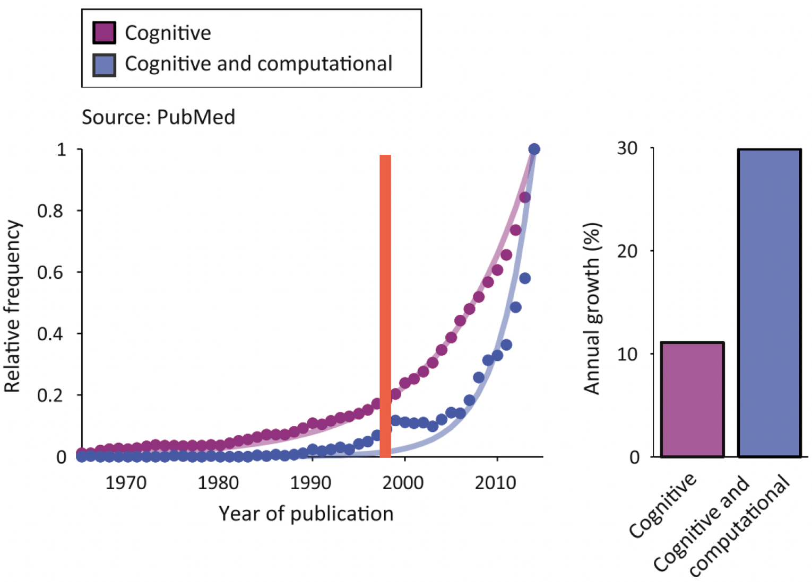

Fundamentals of cognitive modeling and reinforcement learning
Constructing a simple model of behaviour through the Rescorla-Wagner equation and choice rules
“Essentially, all the models are wrong, but some are useful.” - George E.P. Box (1976)
Computational and cognitive modeling
For centuries, astronomers believed that planets moved in perfect circular orbits around the Sun. This mathematical model made intuitive sense and could roughly predict planetary positions, but it failed to fully capture the observed data. The breakthrough came when Johannes Kepler proposed that planets actually follow elliptical orbits; this new mathematical model not only better explained existing observations but also made more accurate predictions about planetary positions.
Orbiting patterns of the Earth around the Sun according to the circular and eliptical models
This historical example illustrates a fundamental principle of scientific modeling: we use mathematics to approximate and understand processes that we cannot directly observe.
We essentially apply this same principle to understand human behaviour. Just as astronomers couldn’t directly see the shape of Earth’s orbit but could infer it through mathematical modeling, cognitive scientists cannot directly observe the mental processes occurring in someone’s mind. Instead, we create mathematical models that attempt to explain observed behavioural patterns – reaction times in a decision-making task, patterns of errors in memory recall, or neural activity during maze navigation.
For instance, when we observe that people take longer to make decisions when faced with more options, or in response to making an error, we can create mathematical models that propose specific cognitive mechanisms to explain these patterns. These models generate precise predictions about behaviour under different conditions, which we can test experimentally. When a model successfully predicts behaviour across multiple scenarios, it suggests that we may have captured something meaningful about the underlying cognitive processes involved.
Therefore, computational modeling is nothing new, it’s specific application towards understanding human behaviour is.
Computational modeling in cognitive science takes two main approaches, as illustrated in the image below1: theory-driven (top-down) and data-driven (bottom-up).
Theory and data-driven approaches to computational modeling
Data-driven approaches - typically used for prediction and classification - start with data (e.g., behavioural or neural) and use statistical techniques to identify patterns and relationships.
On-the-other-hand, theory-driven approaches start with hypotheses about cognitive mechanisms, formalized into mathematical models that make specific predictions about behaviour. The predictions are then tested against empirical data, leading to refinement of both model and theory. This approach aims to provide mechanistic explanations of cognitive processes - in other words, to explain not just what behaviour occurs, but how and why it occurs.
We will exclusively focus on the theory-driven approach in this course.
Cognitive models as mathematical functions
The basic premise of cognitive modeling lies with understanding the brain as an information processing system that can be described mathematically. Generally, the processing of some input by a function to generate output is given as:
\[y = f(x)\]
where \(x\) represents input to the system, \(f\) represents the function, and \(y\) represents the output.
To describe the brain as a mathematical ‘engine’, we can simply replace each of these with the external stimulus, cognitive processes and observed behaviour respectively.
But this interpretation of the brain is nothing new, in fact the psychologist Kurt Lewin in 19362 demonstrated a similar framework with his equation:
\[B = f(P,E)\]
where \(B\) represents behavior, \(P\) represents the person (their internal state and processes), and \(E\) represents the environment.
The relationship between computational models and observable data can also be understood in terms of forward modeling and model inversion 345:
The image below depicts an example participant completing a behavioural task. For example - relevant to this course - they may be completing the two-choice reversal learning task where they select which image they think is going to give them a reward by pressing the associated button.
The cognitive modeling framework consists of forward models, which predict data from theory, and model inversion, which infer cognitive parameters from observations
The forward model represents how we believe the cognitive process generates the data we observe. For instance, in reversal learning, our model might specify how a participant updates their beliefs about reward probabilities and translates these into choices. When applied to neuroimaging, it might describe how cognitive processes should manifest in observed brain activity patterns.
Model inversion works in the opposite direction - it uses the observed data to infer the underlying parameters or states of our model. In behavioural analysis, if we observe a participant consistently choosing one option over another, model inversion helps us infer their underlying reward expectations or learning rates. In neuroimaging, when we observe different patterns of neural activity to faces versus houses, model inversion allows us to infer which brain regions are preferentially involved in processing each category.
The right side of the image above shows a computational model (top) that can generate simulated data (bottom). By comparing this simulated data with real observations (shown by the red horizontal arrows), we can assess how well our model captures the actual cognitive processes. If the model-generated data closely matches the observed data, we gain confidence that our model approximates the underlying cognitive mechanisms.
This bidirectional approach of forward modeling and model inversion is powerful because it allows us to both predict behaviour based on theory and infer hidden cognitive processes from observable data.
The quote by George Box at the top of this page is very important to remember when understanding cognitive models; that no model is correct, some are just more correct than others. In some ways, the quote can be reformulated as follows:
“Essentially all the models are imperfect, but some are useful.”
Traditional fMRI analyses can tell us which brain regions are more active during different task conditions, but they can’t reveal how specific cognitive computations are implemented in the brain. Model-based fMRI solves this by linking computational models to neural activity. We first fit our model to behaviour to estimate trial-by-trial variables (like prediction errors or uncertainty), then use these estimates as regressors in our fMRI analysis to identify active brain regions.
An introduction to model-based fMRI is included as a bonus workshop in the course!
Introduction to reinforcement learning
Humans constantly interact with their environment, making decisions and learning from their outcomes. A child learning to ride a bike, a student solving mathematical problems, or an adult learning to navigate a new city - all these scenarios involve persistent learning through trial and error. How does this learning occur? How do we know which actions lead to better outcomes?
Reinforcement learning (RL) has emerged as one of the most powerful frameworks for understanding how organisms learn from experience. At its core, RL describes how we learn to make decisions that maximize rewards and minimize punishments through our interactions with the environment. When an action leads to a positive outcome, we’re more likely to repeat it; when it leads to a negative outcome, we tend to avoid it in the future.
Reinforcement learning initially emerged in computer science, gaining popularity in the 1980s. However, it was Richard Sutton and Andrew Barto’s 1998 book “Reinforcement Learning: An Introduction”6, which had a significant impact on the fields of biology and psychology. Even though Sutton and Barto were computer scientists developing artificial intelligence algorithms, their mathematical framework turned out to describe biological learning with remarkable accuracy. The key concepts they formalized - such as prediction errors and value functions - aligned surprisingly well with how the brain appears to process rewards and guide behaviour.
The first and second edition of Sutton and Barto’s influential textbook
Whilst mathematically dense for most, Reinforcement learning: An introduction is nonetheless recommended reading!
You can see this exponential increase in popularity for cognitive modeling over time in the diagram below showing the relative frequency of PubMed entries for ‘cognitive’ and ‘cognitive and computational’ as a function of the year7:

Note that the increase in ‘Cognitive and computational’ is almost 3x greater than `Cognitive’ alone!
Reinforcement learning models: the Rescorla-Wagner choice rule
To understand how humans learn from experience through reinforcement learning, scientists need controlled experimental paradigms that can measure learning and decision-making. The two-armed bandit task has emerged as a popular option because it captures fundamental aspects of behaviour in a simple, controlled setting.
Named after slot machines (or “one-armed bandits”), the task presents participants with two choices (like two slot machines) that deliver rewards with different probabilities or amounts. Just as a gambler must learn which slot machine pays out more frequently, participants aren’t told these properties in advance; they must discover through trial and error which option yields more reward.
The exact properties of the bandits can be different across tasks (i.e., reward probability, magnitude), but the underlying structure remains the same.
Whilst the two-armed bandit does not necessarily feature slot machines, its structure reflects the same underlying properties; a choice between two options where the probability of reward is not known
Should you stick with an option that seems good based on your limited experience, or try the other option to gather more information? This creates an engaging dynamic where participants must balance:
- Predicting values: Participants need to determine how rewarding each option is
- Making choices: They must decide which option to select based on their belief
- Learning from outcomes: After each choice, they update their predictions based on whether they received a reward or not
But how does reinforcement learning theories explain behaviour observed in these tasks?
The key principles of reinforcement learning, illustrating the basic interaction cycle between an agent and its environment and the key cognitive processes underlying decision-making
The left side describes the fundamental overview of reinforcement learning, which can be understood as a continuous interaction between an agent (e.g., a human) and their environment (e.g., a behavioural task)8:
This interaction follows a simple cycle:
- The agent observes their environment
- Based on these observations, they take actions
- These actions affect the environment
- The environment provides feedback (rewards or punishments)
- The agent learns from this feedback to improve future decisions
This process - guided by a goal (such as maximizing rewards) - allows agents to learn optimal behavior through experience.
To this end, RL incorporates value-based decision-making, by which learned values guide choices between different options. On the right, five basic processes of value-based decision-making are depicted9:
- Representation: The brain first needs to understand the decision scenario by mapping out the available choices, understanding its own internal state (like hunger or fatigue), and recognizing relevant external factors in the environment
- Valuation: Each possible action is assigned a subjective value based on previous experiences and current circumstances
- Action selection: Using these value estimates, the brain selects and executes one of the available actions
- Outcome evaluation: Once an action is taken, the brain evaluates how rewarding or beneficial the actual outcome was
- Learning: The brain uses this outcome information to refine its decision-making process - adjusting how it represents problems, values options, and makes choices in future situations
Modeling the two-choice task using the Rescorla-Wagner model
How might we practically apply RL models to behavioural choice data? Let’s revisit the two-choice task, specifically the structure that we first introduced in Workshop 2.

The two alternative forced-choice task, where subjects must select between two fractals
Recall that in this task:
Subjects are presented with two fractals (choice presentation)
They select one which they think will reward them (action selection)
They recieve a outcome (either a reward or a loss) (outcome)
In this task the choice and outcome are our data. From this data, we can subsequently measure basic summary statistics such as choice accuracy, which will provide us with a basic measure of subject performance. We can also compare classify performance within the group by a median split, and correlate it with other recorded variables (e.g., age, IQ).
However, what we would like to do in cognitive modeling is to use the RL framework to describe the latent processes underlying participant choice.
When trying to understand human behaviour through cognitive modeling, we typically need two complementary parts to our models: the cognitive model and the observation model.
A cognitive model describes the internal mental processes we think are happening - like how people calculate values, make predictions, or learn from errors. This part deals with the “hidden” or “latent” processes we can’t directly observe
An observation model connects these internal processes to actual measurable behaviour - like the choices people make or their reaction times
The Rescorla-Wagner (RW) model10 is a cognitive model; one of the most influential in psychology.
The Rescorla-Wagner model, developed by Robert Rescorla and Allan Wagner in 1972 to explain animal learning in classical conditioning experiments, is a cornerstone of human learning research and modern reinforcement learning theory. The base model is simple: learning is driven by prediction errors - the difference between what we expect and what actually happens. When our predictions are wrong, we learn and adjust our expectations. When they’re right, we make smaller adjustments or none at all.
Mathematically, the model consists of two key equations:
the Value Update:
\[V_t = V_{t-1} + \alpha PE_{t-1}\]
and the Prediction Error:
\[PE_{t-1} = R_{t-1} - V_{t-1}\]
Where:
\(V_t\) is the value/expectation for the current trial \(t\)
\(V_{t-1}\) is the value/expectation from the previous trial
\(\alpha\) is the learning rate
\(PE_{t-1}\) is the prediction error from the previous trial
\(R_{t-1}\) is the reward received on the previous trial
The Rescorla-Wagner model can be alternatively expressed in plain language as:
\[ \text{\scriptsize Expectations on the next trial} = \text{\scriptsize expectation on the current trial} + \text{\scriptsize learning rate} \times \text{\scriptsize prediction error} \]
The Rescorla-Wagner model demonstrates that learning isn’t about simply forming associations - it’s about reducing prediction errors. The larger the prediction error, the more we adjust our expectations.
The Rescorla-Wagner model still proves remarkably versatile in understanding human behaviour, but modern applications have expanded on this foundation. For instance, more complex models might add separate learning rates for positive and negative outcomes (\(\alpha^+\) and \(\alpha^-\)), or additional parameters for the unchosen option. We will practially implement the latter (Counterfactual RL) in Workshop 8.
Understanding the learning rate
The learning rate \((α)\) is a crucial parameter that determines how much we update our expectations based on new information. It ranges from 0 to 1 and acts like a filter on how much of the prediction error influences our value update.
You can see the influence of the learning rate on trial-by-trial value and value-updating in the graph below 11:
The trial-by-trial effect of different learning rates on value updating
Plotted for simulated data from a 75:25 reward contingency, the graph demonstrates that:
Higher learning rates \((α = 0.9)\) show sharp, rapid changes in value
Lower learning rates \((α = 0.3)\) show more gradual, smoother changes
When feedback switches, higher learning rates lead to more dramatic shifts in value
We can mathematically determine how past outcomes are re-weighted under different learning rates by simply re-writing the Rescorla-Wagner equation as a function of the initial value and the outcome per trial:
From it’s original form:
\[V_t = V_{t-1} + \alpha * PE_{t-1}\]
\[PE_{t-1} = R_{t-1} - V_{t-1}\]
to:
\[V_t = (1-\alpha)V_{t-1} + \alpha R_{t-1}\]
which when expanded further gives:
\[V_t = (1-\alpha)^t V_0 + \sum_{i=1}^{t-i}(1-\alpha)^{i}\alpha R_i\]
This formula above describes how much outcomes in the past contribute to the current value computation. To understand what this means more clearly, we can plot the weighting of previous trials for different values of \(\alpha\):

The effect of different learning rates on the weights of past outcomes
Collectively this graph demonstrates that:
Recent outcomes have stronger weights than distant ones
Higher learning rates \((\alpha = 0.9)\) create a steeper recency gradient
Lower learning rates \((\alpha = 0.3)\) create a more uniform weighting of past outcomes
The weight of any particular outcome decays exponentially with time, controlled by \((1-\alpha)\)
This explains why higher learning rates lead to more volatile value estimates - they place much more weight on recent outcomes compared to historical ones.
But what is the ideal learning rate? Is there an ideal learning rate? The ideal learning rate ultimately depends on the environment, including the reward probability and volatility:
Whilst a higher learning rate would be more appropriate for the shorter 40-trial condition with the 85:15 reward schedule, as there’s a clear difference between options and limited time to learn, in contrast, the 100-trial condition with the more subtle 75:25 reward difference might benefit from a lower learning rate to avoid being overly influenced by random reward variations. Similarly, in a reversal learning task where the reward contingencies switch, if the reversals are sparse, lower learning rates are optimal, whereas in environments with frequent reversals, higher learning rates become necessary to quickly adapt to new contingencies.
However, there are optimal learning rates for specific task environments. The graph above shows choice accuracy as a function of learning rate, demonstrating that for a non-reversing contingency of 80:20, a learning rate of around 0.18 yields the highest choice accuracy (about 85%), with performance declining for both higher and lower rates. This reflects the trade-off between stability and adaptability in learning: too low a learning rate means slow adaptation, while too high a rate leads to over-sensitivity to noise.
The graphs above were generated by running simulations, and not using actual choice data. By running simulations on different trial lengths, we can determine the ideal task environment to elicit more/less learning.
Choice rules
In our framework earlier, we discussed two components of our computational model: the cognitive model and the observation model. Now that we have our cognitive model in the Rescorla-Wagner choice rule, we need a way to translate these internal values into observable choices. This is where choice rules come in - they serve as the “observation model” that connects our internal value estimates to actual decisions.
Choice rules are mathematical functions that specify how internal value differences are mapped onto choice probabilities.
Let’s examine three common choice rules:
Greedy

The ‘greedy’ choice rule plotted using choice probability as a function of value difference
The simplest choice rule is the “greedy” approach:
\[p(C = a) = \begin{cases} 1, & \text{if } V(a) > V(b) \\ 0, & \text{if } V(a) < V(b) \end{cases}\]
As shown in the graph, this creates a step function where one always chooses the option with the higher value. However, this rule is unrealistic - humans rarely behave this consistently.
\(ε\)-Greedy
The ‘\(ε\)-greedy’ choice rule plotted using choice probability as a function of value difference
A slightly more sophisticated version is the “ε-Greedy” approach which adds random exploration:
\[p(C = a) = \begin{cases} 1-\varepsilon, & \text{if } V(a) > V(b) \\ \varepsilon, & \text{if } V(a) < V(b) \end{cases}\]
In this rule, one usually chooses the higher-valued option (with probability \(1-ε\)) but will sometimes explores the lower-valued option (with probability \(ε\)). Whilst more realistic than the greedy approach, this still creates an unrealistic sharp transition in choice probabilities.
Softmax
The ‘softmax’ choice rule plotted using choice probability as a function of value difference
A commonly impored and more psychologically plausible choice rule is the softmax function:
\[p_t(A) = \frac{1}{1 + e^{-\tau(V_t(A)-V_t(B))}}\]
The softmax rule is particularly important because it creates a smooth, sigmoid relationship between value differences and choice probabilities. It does this by converting discrete choices into continuous probabilities, which fall between 0 and 1 and vary smoothly with value differences.
Notably, the inverse temperature parameter \(τ\) (also called the ‘choice consistency parameter’) controls how deterministic choices are within the softmax equation:
- Higher values of \(τ\) (e.g., \(τ = 5\)) leads to more deterministic choices, which is closer to greedy
- Lower values of \(τ\) (e.g., \(τ = 0.3\)) leads to more random choices
- When \(τ = 1,\) small value differences lead to proportionally small differences in choice probabilities
Whilst the softmax rule demonstrates increased choice consistency as value differences increase, it still allows for some randomness in choice even with large value differences. Ultimately, the softmax function has become the standard choice rule in cognitive modeling over greedy rules, because it captures key aspects of human decision-making: we generally choose better options more often, but our choices remain probabilistic rather than deterministic.
Footnotes
Gauld, C., Dumas, G., Fakra, E., Mattout, J., & Micoulaud-Franchi, J. A. (2021, January). The three cultures of computational psychiatry.↩︎
Lewin, K. (1936). Principles of topological psychology. McGraw-Hill.↩︎
Farrell, S., & Lewandowsky, S. (2018). Computational modeling of cognition and behavior. Cambridge University Press.↩︎
Stephan, K. E., Manjaly, Z. M., Mathys, C. D., Weber, L. A., Paliwal, S., Gard, T., … & Petzschner, F. H. (2016). Allostatic self-efficacy: A metacognitive theory of dyshomeostasis-induced fatigue and depression. Frontiers in human neuroscience, 10, 550.↩︎
Ahn, W. Y., Haines, N., & Zhang, L. (2017). Revealing neurocomputational mechanisms of reinforcement learning and decision-making with the hBayesDM package. Computational Psychiatry (Cambridge, Mass.), 1, 24.↩︎
Sutton, R. S., & Barto, A. G. (2018). Reinforcement learning: An introduction. MIT press.↩︎
Palminteri, S., Wyart, V., & Koechlin, E. (2017). The importance of falsification in computational cognitive modeling. Trends in cognitive sciences, 21(6), 425-433.↩︎
Jain, R. (2023). RL: A gentle introduction. Medium.↩︎
Rangel, A., Camerer, C., & Montague, P. R. (2008). A framework for studying the neurobiology of value-based decision making. Nature reviews neuroscience, 9(7), 545-556.↩︎
Rescorla, R. A., Wagner, A.W. (1972). A theory of Pavlovian conditioning: Variations in the effectiveness of reinforcement and nonreinforcement. Classical conditioning II: Current theory and research/Appleton-Century-Crofts.↩︎
Zhang, L., Lengersdorff, L., Mikus, N., Gläscher, J., & Lamm, C. (2020). Using reinforcement learning models in social neuroscience: frameworks, pitfalls and suggestions of best practices. Social Cognitive and Affective Neuroscience, 15(6), 695-707.↩︎